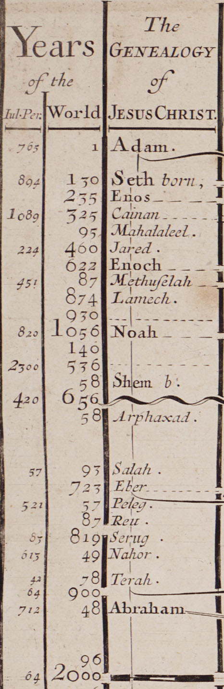
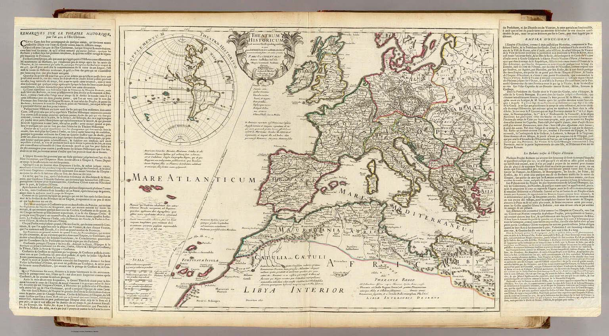
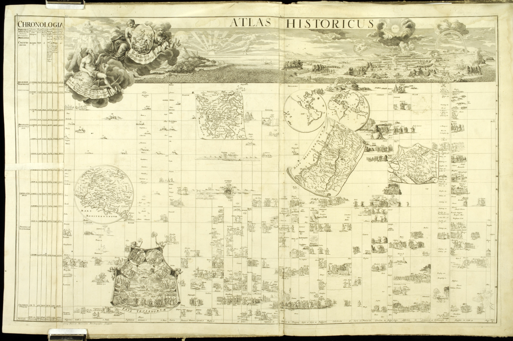

A new Chart of History
Daniel Rosenberg
Principal Investigator
Professor of History, University of Oregon

In 1769, Joseph Priestley published his second timeline, A New Chart of History. Where the 1765 Chart of Biography presented a chronology of individual lives divided into areas of achievement, this new chart presented a history of nations and empires divided into regions of the world. For the two charts, Priestley employed identical size, dimensions, and time scale, yet each operated according to distinct graphic principles.
In the New Chart of History, Priestley explored the relationship between cartography and chronography, that is, between maps of space and maps of time. In Priestley's charts, form is as important as content. From a historical perspective, the crucial innovation in both lies in the way Priestley draws his frame, and, in particular, in his use of a regular, measured time scale to delimit the space of events.
Format
Priestley's design is clear and self-explanatory. For all of the fine historical detail, the rules by which his charts are drawn are simple. In fact, the Chart of Biography offers no explanation, while the New Chart of History explains itself in only a few short lines. Priestley provided a longer theoretical discussion in his pamphlets, but the chart itself states only a few graphic rules: "Each separate country or province is represented by a space bounded by limits drawn parallel to the horizon. The termination of a space by a full line expresses its being annexed to some other country by conquest. If the termination be by a Broken line the accession was not violent but peaceable. The name of the country which makes the acquisition always appears in the continuation of the same space, or of a larger one in which it was absorbed. Dotted lines in all cases express uncertainty….Single events are sometimes expressed by Points."
Measured Time
In the epigraph to the Chart of Biography, Priestley quotes the Roman poet Horace describing time as a flowing river. On the New Chart of History, he quotes Horace again, here from the poem Carmen Saeculare commissioned by Augustus in 17 BC to celebrate the beginning of a new era or saeculum. In lustrum meliusque semper Prorogat aevum. new periods come better things. Poetic, yes, but technical, too. For Priestley, chronographic time is measured time.
The Interval

Prior to Priestley, it was typical for chronology charts to compress and expand time scales in opportunistic rather than systematic ways. According to Francis Tallents's View of Universal History (1685), Mahalaleel was born 65 years before Jared, and Jared was born 182 years before Enoch, yet on his chart, these events are equally spaced. Tallents's chart did a good job compressing data but did not depict shapes or patterns in it.
The Timeline
The timeline in Priestley's charts is simple: dots, lines, and numbers run from left to right beginning in 1200 BC and ending in 1800 AD. From every century, a pinstripe runs vertically, making columns of one hundred years.
The central visual argument of Priestley's chart is simple: time in his chart of history is like space on a geographic map. A key inspiration for Priestley's charts was the mappemonde, which gave a view of the whole world at a single glance. The Mercator projection introduced in the 1560s produced a rectilinear grid much like the one Priestley used in his charts.

Priestley also drew inspiration from historical maps. Since Abraham Ortelius in the sixteenth century, such maps had been important tools for humanistic study. In the eighteenth century, cartographers such as Guillaume Delisle continued this tradition. The image above shows Delisle's map of the Western world in 400 AD. Delisle's maps aimed to show who ruled what when, but, by their nature, they could only show moments in time, while Priestley's aim was to visualize change, and in particular, what he called "revolutions of empire." Delisle was sensitive to this limitation and provided extensive chronological information along with his maps. In our own reconstruction of Priestley's geography, we have made use of Delisle's maps to help us understand political geography as Priestley understood it.
The two eyes of History
In the seventeenth and eighteenth centuries, it was often said that chronology and geography are "the two eyes of history," and often works of historiography from the period contained chronological and cartographical sections. A number of works in the eighteenth century tried to incorporate chronological and geographical information in a single graphic. In 1718, for example, Johann Georg Hagelgans mashed up chronological tables and historical maps. His chronological framework borrowed directly from the ages-old system of Eusebius: vertical columns represent nations while (irregular) horizontal rows represent years in chronological series. With great imagination, Hagelgans embroidered his table with images of places and battles and, drawn as if laid upon the table, maps illustrating key events.
